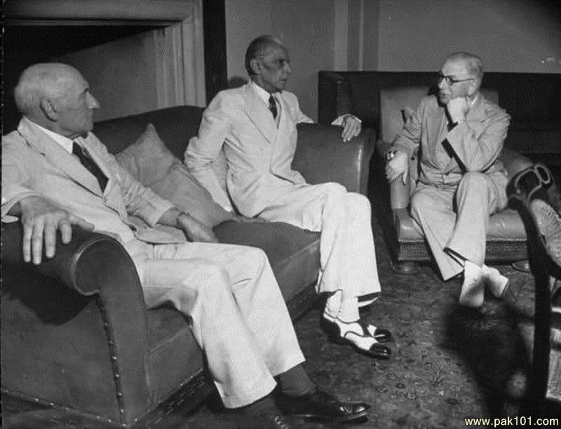

Muhammad Ali Jinnah was born in a rented apartment on the second floor of Wazir Mansion in Karachi, Pakistan (then part of India), on December 25, 1876. At the time of his birth, Jinnah’s official name was Mahomedali Jinnahbhai. The eldest of his parents’ seven children, Jinnah was underweight and appeared fragile at the time of his birth. But Jinnah’s mother, Mithibai, was convinced her delicate infant would one day achieve great things. Jinnah’s father, Jinnahbhai Poonja, was a merchant and exporter of cotton, wool, grain and range of other goods. As a whole, the family belonged to the Khoja Muslim sect. When Muhammad Ali Jinnah was 6 years old, his father placed him in the Sindh Madrasatul-Islam School. Jinnah was far from a model student. He was more interested in playing outside with his friends than focusing on his studies. As the proprietor of a thriving trade business, Jinnah’s father emphasized the importance of studying mathematics, but, ironically, arithmetic was among Jinnah’s most hated subjects.
At the age of 16, when offered an opportunity to work as an apprentice in Sir Frederick Leigh Croft’s company, ‘Graham's Shipping and Trading Company’, he decided to move to London in 1892. Before leaving, he reluctantly succumbed to his mother’s relentless insistence and got married to Emibai Jinnah. However, both his mother and Emibai died while he was in England. An ambitious teenager, he later resigned from the apprenticeship of the shipping company and started pursuing law to become a barrister. He joined the Lincoln's Inn and in 1895 was called to the bar in England.
Jinnah started practicing law in Bombay at the age of twenty and his career as a barrister started to flourish after he received an invitation from the Advocate General of Bombay, to work from his chambers. In 1900, he was also offered the position of the Bombay Presidency Magistrate, which he served for a short while. His fame as a lawyer surged exponentially after he fought the ‘Caucus Case’ in 1907. Though, he failed to secure a bail for Bal Gangadhar Tilak on the charges of sedition in 1908, he assured an acquittal for him when he was charged again with sedition in 1916.
 He became interested in politics during his frequent visits to the House of Commons while studying at Lincoln's Inn but his actual political affiliation started after he attended the 20th annual meeting of the Indian National Congress in 1904. In 1906 he joined the Congress and started participating in Indian Independence movement. He strongly opposed separate electorate for Muslims and was elected to the Imperial Legislative Council as Bombay's Muslim representative in 1909. In 1912, he attended a meeting of Muslim League and a year later joined the party while still remaining affiliated to the Congress and tried his best to bring the Congress and the League together. In 1913, he was a member of the delegation sent to England on behalf of Congress, led by Gokhale. He was hailed as an ambassador of Hindu-Muslim unity by the Congress leaders and was immensely admired for his liberal ideologies. In 1916, while he served as the president of Muslim League, the Congress and the League signed the ‘Lucknow Pact’, according to which the quotas were to be allocated to Muslims and Hindus regarding representation in the Indian provinces. The same year he also played a key role in establishing the Home Rule League. In 1923, he was elected as Muslim representative for Bombay in the Central Legislative Assembly. He was extremely effective as a parliamentarian and also started working with the Swaraj Party. By 1926, things started to fall apart between the congress and Jinnah and he started supporting separate electorates for Muslims. He, however, continued to believe Muslim tradition and rights did not have any threats under united India.